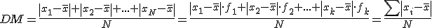
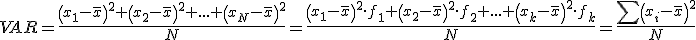

Estadística
medidas de dispersión
Rango o recorrido: es la resta del mayor valor menos el menor.
Desviación media: es la media de las desviaciones de la media:

Varianza:

Desviación típica:
Rango o recorrido intercuartílico: Q3-Q1
Ahora podemos ver en este video cómo calcular la media y la desviación típica con calculadora
Ejemplo. Preguntamos a 20 familias sobre el número de hijos:
| xi | fi | desviación |xi-μ| |
| 0 | 1 | 2,7 |
| 1 | 2 | 1,7 |
| 2 | 6 | 0,7 |
| 3 | 6 | 0,3 |
| 4 | 3 | 1,3 |
| 5 | 2 | 2,3 |
| Σ | 20 |
μ = 2,7 recorrido = 5 DM = 1,03 σ = 1,27 VAR = 1,61 Rango intercuartílico=1,5
Ejercicios
1.- Calcula el recorrido, el rango intercuartílico, la desviación media y la desviación típica del ejercicio 1 del apartado de medidas de centralización
2.- Calcula la desviación típica del ejercicio 2 del apartado de medidas de centralización
Soluciones:
1.- recorrido=7; rango intercuartílico=3; DM=1,64 ; σ=1,9
2.- σ=19,25
Obra publicada con Licencia Creative Commons Reconocimiento No comercial Compartir igual 4.0